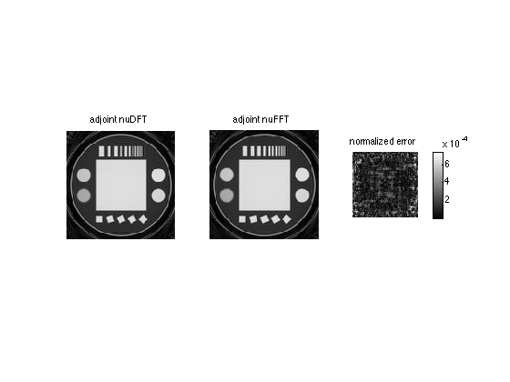

nuFFTW command-line interface demo
This demo explains how to use the command-line interface of the nuFFTW library.
Contents
nuDFT
!../bin/nudft_double 1 adjoint ../data/spiral2d_phantom_imagenudft.cdb ../data/spiral2d_phantom_data.cdb 2 128 128 ../data/spiral2d_phantom_traj.db imagenudft = reshape(vec2complex(readbin('../data/spiral2d_phantom_imagenudft.cdb','double')),128,128);
** nuDFT ** transform initialization and data loading: 0.00172496s adjoint transformation: 26.3397s
Wow, that's a lot of time for such a small trajectory!
nuFFT
!../bin/nufft_double 1 adjoint ../data/spiral2d_phantom_imagenufft.cdb ../data/spiral2d_phantom_data.cdb 2 128 128 -3 2 spm ../data/spiral2d_phantom_traj.db imagenufft = reshape(vec2complex(readbin('../data/spiral2d_phantom_imagenufft.cdb','double')),128,128);
** nuFFT ** transform initialization and data loading: computing implementation data: 0.0837891s initializing external libraries: 1.00393s tuning: 0.0131321s 1.10279s adjoint transformation: 0.00707006s deleting nuFFT implementation cleaning external libraries
That was faster.
Let's check the accuracy:
e = get_image_errors(imagenudft,imagenufft);
max error: 0.0014982
The error between the direct nuFT (nuDFT) and the nuFFT matches the input maximum aliasing error with which we created the nuFFT implementation.
figure subplot(131) imshowz(imagenudft) title('adjoint nuDFT') subplot(132) imshowz(imagenufft) title('adjoint nuFFT') subplot(133) imshowz(e) colorbar title('normalized error')
Write nuFFT implementation to file
!../bin/write_nufft_impfile_double 1 2 128 128 -3 2 spm ../data/spiral2d_phantom_traj.db ../data/spiral2d_phantom.imp
** write nuFFT implementation file ** computing implementation data: 0.084296s writing implementation to file: 0.00577688s deleting nuFFT implementation
Now we will perform an adjoint and forward nuFFT using this pre-written nuFFT implememntation file
!../bin/nufft_double 1 adjoint ../data/spiral2d_phantom_imagenufft.cdb ../data/spiral2d_phantom_data.cdb ../data/spiral2d_phantom.imp
** nuFFT ** transform initialization and data loading: loading implementation from file: 0.00719094s initializing external libraries: 1.00409s tuning: 0.0135119s 1.02574s adjoint transformation: 0.00709915s deleting nuFFT implementation cleaning external libraries
!../bin/nufft_double 1 forward ../data/spiral2d_phantom_imagenufft.cdb ../data/spiral2d_phantom_data2.cdb ../data/spiral2d_phantom.imp
** nuFFT ** transform initialization and data loading: loading implementation from file: 0.00727987s initializing external libraries: 1.00408s tuning: 0.0130732s 1.02508s forward transformation: 0.00851583s deleting nuFFT implementation cleaning external libraries
Check consistency between the forward and adjoint operators:
trajdata = readbin('../data/spiral2d_phantom_traj.db','double'); Nsamples = length(trajdata)/3; trajdata = reshape(trajdata,3,Nsamples); trajectory = trajdata(1:2,:)'; dcf = trajdata(3,:)'; kdata = vec2complex(readbin('../data/spiral2d_phantom_data.cdb','double')); kdata_dc = kdata .* sqrt(dcf); imagenufft_vec = vec2complex(readbin('../data/spiral2d_phantom_imagenufft.cdb','double')); kdata_dc2 = vec2complex(readbin('../data/spiral2d_phantom_data2.cdb','double')); kdata_dc2'*kdata_dc-imagenufft_vec'*imagenufft_vec
ans =
2.72848410531878e-12 + 1.4210854715202e-13i
nuFFTW - Auto-tune the nuFFT
!../bin/nufftw_double 1 2 128 128 -3 1.2 2 20 spm nufft ../data/spiral2D_phantom_traj.db ../data/spiral2D_phantom_optimal.imp
** nuFFTW ** initializing external libraries: 1.02156s implementation no. 0 computing implementation data: 0.237301s tuning: 0.0151532s adjoint transformation: 0.00600195s adjoint transformation: 0.004915s adjoint transformation: 0.00489306s adjoint transformation: 0.00488782s adjoint transformation: 0.00498605s adjoint transformation: 0.00492191s adjoint transformation: 0.00504208s adjoint transformation: 0.00490403s adjoint transformation: 0.00485802s adjoint transformation: 0.005054s average runtime: 0.00504639s implementation no. 1 computing implementation data: 0.197322s tuning: 0.0131521s adjoint transformation: 0.00484419s adjoint transformation: 0.00429487s adjoint transformation: 0.00431299s adjoint transformation: 0.00418687s adjoint transformation: 0.00435495s adjoint transformation: 0.00414896s adjoint transformation: 0.00414109s adjoint transformation: 0.00414896s adjoint transformation: 0.00435495s adjoint transformation: 0.00420499s average runtime: 0.00429928s deleting nuFFT implementation implementation no. 2 computing implementation data: 0.174408s tuning: 0.0140679s adjoint transformation: 0.00563097s adjoint transformation: 0.00506592s adjoint transformation: 0.00492191s adjoint transformation: 0.00492096s adjoint transformation: 0.00512218s adjoint transformation: 0.00517201s adjoint transformation: 0.00496197s adjoint transformation: 0.004951s adjoint transformation: 0.00496292s adjoint transformation: 0.00492215s average runtime: 0.0050632s deleting nuFFT implementation implementation no. 3 computing implementation data: 0.161691s tuning: 0.0115891s adjoint transformation: 0.00553083s adjoint transformation: 0.00458384s adjoint transformation: 0.00453496s adjoint transformation: 0.00466919s adjoint transformation: 0.00454211s adjoint transformation: 0.00455809s adjoint transformation: 0.00473595s adjoint transformation: 0.0045321s adjoint transformation: 0.00451207s adjoint transformation: 0.00452113s average runtime: 0.00467203s deleting nuFFT implementation implementation no. 4 computing implementation data: 0.150375s tuning: 0.011658s adjoint transformation: 0.00536489s adjoint transformation: 0.00446582s adjoint transformation: 0.00431108s adjoint transformation: 0.00437784s adjoint transformation: 0.00437403s adjoint transformation: 0.00432801s adjoint transformation: 0.00433016s adjoint transformation: 0.00431418s adjoint transformation: 0.00454497s adjoint transformation: 0.0043509s average runtime: 0.00447619s deleting nuFFT implementation implementation no. 5 computing implementation data: 0.133581s tuning: 0.01121s adjoint transformation: 0.00496507s adjoint transformation: 0.00404191s adjoint transformation: 0.00399995s adjoint transformation: 0.00420713s adjoint transformation: 0.00399899s adjoint transformation: 0.00398588s adjoint transformation: 0.00404906s adjoint transformation: 0.00408888s adjoint transformation: 0.00399995s adjoint transformation: 0.00398898s average runtime: 0.00413258s deleting nuFFT implementation implementation no. 6 computing implementation data: 0.131347s tuning: 0.010895s adjoint transformation: 0.00567508s adjoint transformation: 0.00520706s adjoint transformation: 0.00532103s adjoint transformation: 0.00489616s adjoint transformation: 0.00494599s adjoint transformation: 0.00501204s adjoint transformation: 0.00492311s adjoint transformation: 0.00502706s adjoint transformation: 0.00494504s adjoint transformation: 0.00491214s average runtime: 0.00508647s deleting nuFFT implementation implementation no. 7 computing implementation data: 0.120973s tuning: 0.0104499s adjoint transformation: 0.00582194s adjoint transformation: 0.00494504s adjoint transformation: 0.00518513s adjoint transformation: 0.00492287s adjoint transformation: 0.00490499s adjoint transformation: 0.00501704s adjoint transformation: 0.005337s adjoint transformation: 0.00507593s adjoint transformation: 0.00492811s adjoint transformation: 0.00500989s average runtime: 0.00511479s deleting nuFFT implementation implementation no. 8 computing implementation data: 0.114802s tuning: 0.0101941s adjoint transformation: 0.00538492s adjoint transformation: 0.00434709s adjoint transformation: 0.0044291s adjoint transformation: 0.00430512s adjoint transformation: 0.00432897s adjoint transformation: 0.00437212s adjoint transformation: 0.00430918s adjoint transformation: 0.00437999s adjoint transformation: 0.00438404s adjoint transformation: 0.00429606s average runtime: 0.00445366s deleting nuFFT implementation implementation no. 9 computing implementation data: 0.11001s tuning: 0.00996494s adjoint transformation: 0.00514197s adjoint transformation: 0.00386381s adjoint transformation: 0.00392604s adjoint transformation: 0.0038619s adjoint transformation: 0.00409698s adjoint transformation: 0.00386691s adjoint transformation: 0.00381804s adjoint transformation: 0.00388002s adjoint transformation: 0.00405407s adjoint transformation: 0.00384712s average runtime: 0.00403569s deleting nuFFT implementation implementation no. 10 computing implementation data: 0.109162s tuning: 0.0102491s adjoint transformation: 0.010159s adjoint transformation: 0.00924611s adjoint transformation: 0.00918508s adjoint transformation: 0.00936413s adjoint transformation: 0.00933218s adjoint transformation: 0.00942516s adjoint transformation: 0.00917196s adjoint transformation: 0.00918698s adjoint transformation: 0.00920391s adjoint transformation: 0.00921011s average runtime: 0.00934846s deleting nuFFT implementation implementation no. 11 computing implementation data: 0.106411s tuning: 0.0102172s adjoint transformation: 0.00550699s adjoint transformation: 0.00458503s adjoint transformation: 0.00467706s adjoint transformation: 0.00459814s adjoint transformation: 0.00478697s adjoint transformation: 0.00458384s adjoint transformation: 0.00458407s adjoint transformation: 0.00458717s adjoint transformation: 0.00457692s adjoint transformation: 0.00464106s average runtime: 0.00471272s deleting nuFFT implementation implementation no. 12 computing implementation data: 0.102811s tuning: 0.010361s adjoint transformation: 0.00576305s adjoint transformation: 0.00466108s adjoint transformation: 0.0045681s adjoint transformation: 0.00465107s adjoint transformation: 0.0045712s adjoint transformation: 0.00455189s adjoint transformation: 0.00455093s adjoint transformation: 0.00487113s adjoint transformation: 0.00457978s adjoint transformation: 0.00454402s average runtime: 0.00473123s deleting nuFFT implementation implementation no. 13 computing implementation data: 0.099869s tuning: 0.011358s adjoint transformation: 0.00717211s adjoint transformation: 0.0061419s adjoint transformation: 0.00605702s adjoint transformation: 0.00605798s adjoint transformation: 0.00607109s adjoint transformation: 0.006073s adjoint transformation: 0.00646091s adjoint transformation: 0.00624204s adjoint transformation: 0.00607991s adjoint transformation: 0.00631213s average runtime: 0.00626681s deleting nuFFT implementation implementation no. 14 computing implementation data: 0.0980971s tuning: 0.01056s adjoint transformation: 0.0125802s adjoint transformation: 0.0112429s adjoint transformation: 0.0113671s adjoint transformation: 0.0112491s adjoint transformation: 0.0112371s adjoint transformation: 0.0112648s adjoint transformation: 0.011838s adjoint transformation: 0.011354s adjoint transformation: 0.011595s adjoint transformation: 0.011234s average runtime: 0.0114962s deleting nuFFT implementation implementation no. 15 computing implementation data: 0.0943499s tuning: 0.0105019s adjoint transformation: 0.00721598s adjoint transformation: 0.00608611s adjoint transformation: 0.00631309s adjoint transformation: 0.00599098s adjoint transformation: 0.00602889s adjoint transformation: 0.00600886s adjoint transformation: 0.00597286s adjoint transformation: 0.0061059s adjoint transformation: 0.00606608s adjoint transformation: 0.00603104s average runtime: 0.00618198s deleting nuFFT implementation implementation no. 16 computing implementation data: 0.0918581s tuning: 0.0109632s adjoint transformation: 0.00953794s adjoint transformation: 0.00781894s adjoint transformation: 0.00774097s adjoint transformation: 0.00773096s adjoint transformation: 0.00776005s adjoint transformation: 0.00774407s adjoint transformation: 0.00778103s adjoint transformation: 0.00770116s adjoint transformation: 0.00797486s adjoint transformation: 0.00770497s average runtime: 0.0079495s deleting nuFFT implementation implementation no. 17 computing implementation data: 0.0887401s tuning: 0.031127s adjoint transformation: 0.00752592s adjoint transformation: 0.00678706s adjoint transformation: 0.00664401s adjoint transformation: 0.00639105s adjoint transformation: 0.00643301s adjoint transformation: 0.00647783s adjoint transformation: 0.00642109s adjoint transformation: 0.00664806s adjoint transformation: 0.00638485s adjoint transformation: 0.00648093s average runtime: 0.00661938s deleting nuFFT implementation implementation no. 18 computing implementation data: 0.085429s tuning: 0.01002s adjoint transformation: 0.00876594s adjoint transformation: 0.00722694s adjoint transformation: 0.00733113s adjoint transformation: 0.00727916s adjoint transformation: 0.00723815s adjoint transformation: 0.0071981s adjoint transformation: 0.00720406s adjoint transformation: 0.00726891s adjoint transformation: 0.00720596s adjoint transformation: 0.00749087s average runtime: 0.00742092s deleting nuFFT implementation implementation no. 19 computing implementation data: 0.083379s tuning: 0.00989318s adjoint transformation: 0.00678992s adjoint transformation: 0.00553298s adjoint transformation: 0.00580812s adjoint transformation: 0.0055511s adjoint transformation: 0.00543404s adjoint transformation: 0.00563812s adjoint transformation: 0.00545788s adjoint transformation: 0.00550508s adjoint transformation: 0.00576401s adjoint transformation: 0.00562096s average runtime: 0.00571022s deleting nuFFT implementation optimal implementation is no. 9 writing implementation to file: 0.00727892s cleaning external libraries deleting nuFFT implementation ../bin/nufftw_double 1 2 128 128 -3 1.2 2 20 spm nufft ../data/spiral2D_phantom_traj.db ../data/spiral2D_phantom_optimal.imp: Segmentation fault
Use the pre-written optimal nuFFT implementation file for nuFFT:
!../bin/nufft_double 1 adjoint ../data/spiral2d_phantom_imagenufft.cdb ../data/spiral2D_phantom_data.cdb ../data/spiral2D_phantom_optimal.imp
** nuFFT ** transform initialization and data loading: loading implementation from file: 0.00927806s initializing external libraries: 1.00447s tuning: 0.0132799s 1.02806s adjoint transformation: 0.00496387s deleting nuFFT implementation cleaning external libraries
imagenufft = reshape(vec2complex(readbin('../data/spiral2d_phantom_imagenufft.cdb','double')),128,128); e = get_image_errors(imagenudft,imagenufft); figure subplot(131) imshowz(imagenudft) title('adjoint nuDFT') subplot(132) imshowz(imagenufft) title('adjoint nuFFT') subplot(133) imshowz(e) colorbar title('normalized error')
max error: 0.00074529